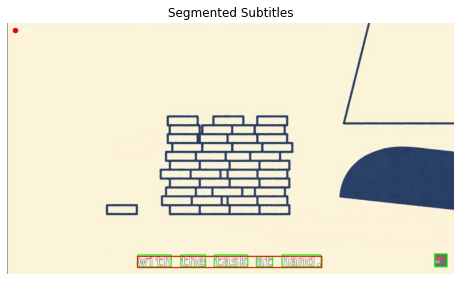
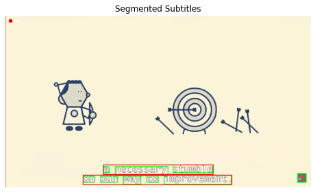
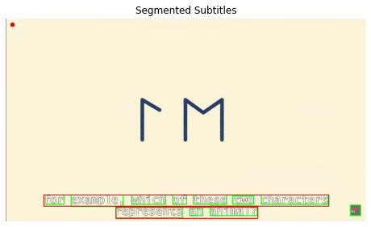

Building backend systems,
ML models & data tools — one repo at a time.
A running log of what I've shipped: production backends for two live mobile apps,
a handful of machine-learning experiments, and one dashboard nobody asked for
but everybody now uses.
2in production
5shipped & archived
7repos tracked
Systems
Every row below is a real repo. Status reflects whether it's still running in production.
IDProjectStackStatus
SYS-01live
AIPT — AI Personal Trainer
Backend for an AI fitness-coaching app. Turns a food photo or a product barcode into a full
nutrition breakdown (calories, protein, fat, sugar…), using a rotating pool of Gemini API keys
that auto-cools down on rate limits, plus Open Food Facts for barcode lookups. Daily logs are
stored per user in Supabase.
Backend work for a Cairo auto-service-center platform. Tracks car status, repair progress,
service history and next-service reminders, powering both the customer app and the public
booking site. Rated 5.0 on the Play Store.
Interactive Power BI dashboard covering workforce data across 5 Middle-East countries —
department headcount, gender split, salary KPIs, and hiring trends from 2016 to 2020.
689 employees, $1.42M total monthly salary, 20+ departments.
The classic reinforcement-learning balancing problem, solved three different ways —
Monte Carlo, SARSA, and Q-Learning — to see how each algorithm learns to keep the pole
upright on a moving cart.
Takes a video with hardcoded subtitles and locates the text: a red box marks the whole
subtitle region, and a green box marks each individual word inside it.



Word-level bounding boxes across three sample frames
I work across backend engineering, machine learning, and data analytics — a mix of shipped
production APIs behind live mobile apps, and self-directed notebooks exploring reinforcement
learning, computer vision, and deep learning. This page is the log of both.